📖 How to use this guide
Part A explains every idea of the chapter from the very beginning (no earlier knowledge is assumed) and proves all twelve theorems in full. Part B gives worked solutions to every question in the chapter: all Think and Reflect boxes, Exercise Sets 5.1 to 5.6, and all 26 End-of-Chapter Exercises. Part C is a one-page revision sheet. Read Part A first with a pencil and paper, drawing each figure yourself as you go. Tap any figure to zoom.
What is a circle?
Everything in this chapter is drawn on a flat sheet of paper. In mathematics we call such a flat surface a plane. So all our points, lines and circles live on one plane.
Circle
The set of all points on a plane that are at the same distance from one fixed point. Think of a goat tied to a peg by a 3-metre rope: if it walks all the way round keeping the rope tight, the path it traces is a circle.
Centre the peg
The fixed point.
Radius the rope
The fixed distance from the centre to any point of the circle. Every radius of the same circle has the same length. We usually write it as r.
Locus
A set of points that all satisfy one particular condition is called the locus of points satisfying that condition. So a circle is the locus of points at a fixed distance from a fixed point. The word simply means “the path or the collection of all such points”.
Chord
If B and C are two points on the circle, the straight line segment BC is a chord. A chord always has both ends on the circle.
Diameter
A chord that passes through the centre. A diameter is the longest chord, and its length is twice the radius.
Angle subtended by a chord at the centre
Join the two ends of the chord BC to the centre A. The angle ∠BAC formed is the angle subtended by the chord BC at the centre.
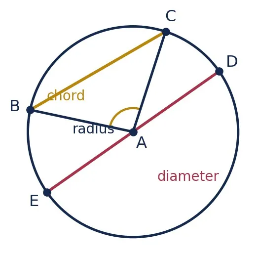
🤔 Think and Reflect (page 93)
Jamuna wants to find the centre of a circular paper. Amina’s suggestion: fold the paper in half so the two halves match exactly, and open it: the crease is a diameter. Fold it in half again in a different direction: the second crease is another diameter. Every diameter passes through the centre, so the point where the two creases cross is the centre.
Symmetries of a circle
Rotational symmetry. Turn a wheel by any amount and it still looks exactly the same. So a circle has complete rotational symmetry: it can be rotated about its centre through any angle at all and it looks unchanged. No other shape has this property.
Reflection symmetry. Cut out a paper circle and fold it so that the two halves overlap exactly. The crease is a line of reflection symmetry, and it always passes through the centre: it is a diameter. Every diameter is a line of reflection symmetry, and a circle has infinitely many of them.
💡 Why symmetry matters here
Almost every theorem in this chapter is really the symmetry of the circle in disguise. If you rotate the circle, a chord moves to a new chord of exactly the same length, and its distance from the centre does not change. That single idea is behind Theorems 2, 3, 6 and 7.
How many circles pass through given points?
Through one point. Infinitely many circles: you may choose any centre and any suitable radius.
Through two points A and B. If a circle passes through A and B, its centre O satisfies OA = OB (both are radii). So the centre must be equidistant from A and B. The set of all points equidistant from A and B is exactly the perpendicular bisector of AB. Therefore:
Since the perpendicular bisector contains infinitely many points, infinitely many circles pass through two given points. The smallest one has AB itself as diameter, so its radius is ½ AB. There is no largest one: as the centre moves further away along the bisector, the radius keeps growing and the circle looks flatter near A and B.
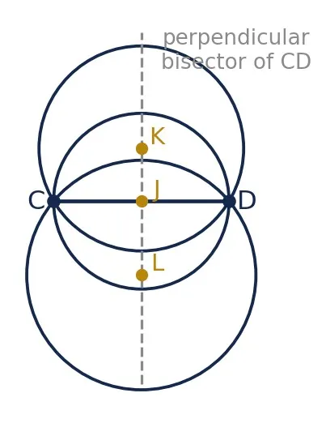
Through three points. Now something special happens.
Theorem 1: there is exactly one circle through three non-collinear points
Statement: There is a unique circle passing through three non-collinear points.
What the words mean: Collinear means “lying on one straight line”. Non-collinear means the three points do not lie on a single straight line, so they form a proper triangle. Unique means there is one such circle and no more.
Given: Three points A, B and C that are not collinear. To prove: Exactly one circle passes through A, B and C.
| Statement | Reason |
|---|---|
| Suppose a circle passes through A, B, C and let its centre be O. | assumption |
| Then OA = OB, since both are radii. | radii of the same circle |
| ∴ O lies on the perpendicular bisector of AB. | points equidistant from A and B form this line |
| Also OA = OC, since both are radii. | radii of the same circle |
| ∴ O lies on the perpendicular bisector of AC. | same reason |
| A, B, C are not collinear, so AB and AC are not parallel; hence their perpendicular bisectors are not parallel. | given |
| ∴ These two perpendicular bisectors meet at exactly one point. | two non-parallel lines meet at one point only |
| That single point must be O, so the centre is fixed and unique. | conclusion |
| Taking O as centre and OA as radius, the circle drawn passes through A, B and C. | since OA = OB = OC |
Hence proved.
Three non-collinear points are also the three vertices of a triangle. So every triangle has exactly one circle through its three vertices.
Circumcircle and circumcentre. That circle is called the circumcircle of the triangle, and its centre O is the circumcentre. We say the circle circumscribes the triangle, and the triangle is inscribed in the circle. The circumcentre is found where the perpendicular bisectors of the sides meet.
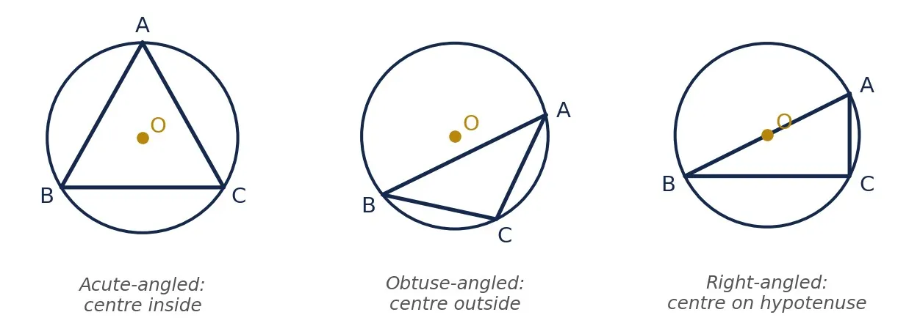
- Acute-angled triangle → circumcentre lies inside the triangle.
- Obtuse-angled triangle → circumcentre lies outside the triangle.
- Right-angled triangle → circumcentre lies exactly at the midpoint of the hypotenuse.
Why no circle passes through three collinear points
If A, B, C all lie on one straight line, then the perpendicular bisectors of AB and BC are both perpendicular to that same line, so they are parallel and never meet. There is no possible centre, so no such circle exists. This also shows a straight line can cut a circle in at most two points.
Chords and the angles they subtend
Tie a thread tightly between two points of a bicycle wheel: the thread is a chord. Join its two ends to the centre; the thread subtends an angle at the centre. Now spin the wheel. The thread turns with it, giving a new chord of exactly the same length, subtending exactly the same angle. This suggests our next theorem.
Theorem 2: equal chords subtend equal angles at the centre
Statement: Equal chords of a circle subtend equal angles at the centre of the circle.
Given: A circle with centre C, and two chords AB and DE with AB = DE. To prove: ∠ACB = ∠DCE.
Idea: the two angles sit in two different triangles, △CAB and △CDE. If we can show these triangles are congruent, the angles must be equal by CPCT.
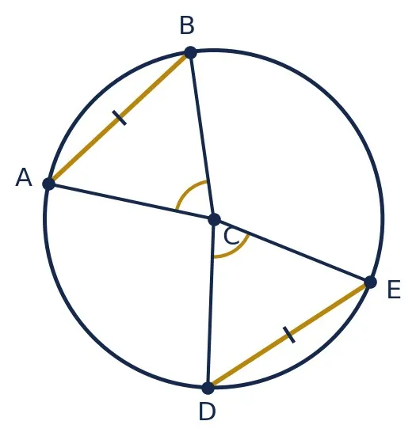
| Statement | Reason |
|---|---|
| CA = CB = r | both are radii of the circle |
| CD = CE = r | both are radii of the circle |
| ∴ CA = CD and CB = CE | each equals the radius r |
| AB = DE | given |
| ∴ △CAB ≅ △CDE | by SSS congruence |
| ∴ ∠ACB = ∠DCE | CPCT |
Hence proved.
Theorem 3: equal angles at the centre give equal chords (converse of Theorem 2)
Statement: Chords of a circle that subtend equal angles at the centre are equal.
Given: A circle with centre C, and chords AB and DE with ∠ACB = ∠DCE. To prove: AB = DE.
| Statement | Reason |
|---|---|
| CA = CB = r and CD = CE = r | all are radii of the circle |
| ∴ CA = CD and CB = CE | each equals the radius r |
| ∠ACB = ∠DCE | given (this is the included angle) |
| ∴ △ACB ≅ △DCE | by SAS congruence |
| ∴ AB = DE | CPCT |
Hence proved.
🧠 Notice the pattern
Theorem 2 uses SSS and gives equal angles. Theorem 3 uses SAS and gives equal chords. They are converses: each one is the other read backwards. Together: equal chords ⇔ equal angles at the centre.
Midpoints and perpendicular bisectors of chords
Join the centre of a circle to the midpoint of a chord. Does anything special happen? It does: the line you draw is always perpendicular to the chord.
Theorem 4: centre to midpoint of a chord is perpendicular to it
Statement: The line joining the centre of a circle and the midpoint of a chord of the circle is perpendicular to the chord.
Given: A circle with centre C, a chord AB, and M the midpoint of AB. To prove: CM ⊥ AB.
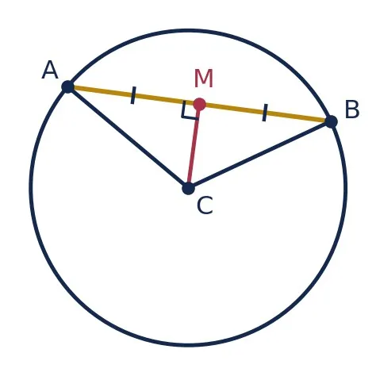
| Statement | Reason |
|---|---|
| CA = CB | both are radii |
| AM = BM | M is the midpoint of AB |
| CM = CM | common side |
| ∴ △CMA ≅ △CMB | by SSS congruence |
| ∴ ∠CMA = ∠CMB | CPCT |
| But ∠CMA + ∠CMB = 180° | AMB is a straight line (linear pair) |
| ∴ each angle = 180° ÷ 2 = 90° | two equal angles adding to 180° |
| ∴ CM ⊥ AB | an angle of 90° means perpendicular |
Hence proved.
Theorem 5: perpendicular from the centre bisects the chord (converse of Theorem 4)
Statement: The perpendicular from the centre of a circle to a chord of the circle bisects the chord.
Given: A circle with centre C, chord AB, and CM ⊥ AB with M on AB. To prove: AM = BM.
| Statement | Reason |
|---|---|
| ∠CMA = ∠CMB = 90° | given, CM ⊥ AB |
| CA = CB | both are radii (these are the hypotenuses) |
| CM = CM | common side |
| ∴ △CMA ≅ △CMB | by RHS congruence |
| ∴ AM = BM | CPCT |
Hence proved.
⭐ Very useful in problems
Together, Theorems 4 and 5 say that the perpendicular from the centre to a chord and the line from the centre to the chord’s midpoint are the same line. So whenever you drop a perpendicular from the centre onto a chord, it automatically cuts the chord into two equal halves. Almost every numerical problem in this chapter uses this.
Distance of a chord from the centre
What “distance” means here. The distance from the centre to a chord always means the perpendicular distance: the length of the perpendicular dropped from the centre onto the chord. By Theorem 5, the foot of this perpendicular is the midpoint of the chord.
Theorem 6: equal chords are equidistant from the centre
Statement: Chords of a circle having the same length are all at the same distance from the centre of the circle.
Given: Circle with centre C; chords AB and FG with AB = FG; E and H are the midpoints of AB and FG. To prove: CE = CH.
Note: By Theorem 4, CE ⊥ AB and CH ⊥ FG, so CE and CH really are the distances of the two chords from the centre.
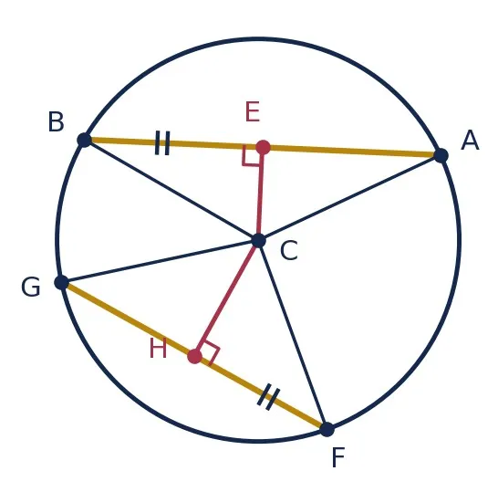
| Statement | Reason |
|---|---|
| AE = ½ AB and FH = ½ FG | E, H are midpoints |
| AB = FG | given |
| ∴ AE = FH | halves of equal lengths |
| ∠CEA = ∠CHF = 90° | CE ⊥ AB and CH ⊥ FG (Theorem 4) |
| CA = CF | both are radii (the hypotenuses) |
| ∴ △CEA ≅ △CHF | by RHS congruence |
| ∴ CE = CH | CPCT |
Hence proved.
Second method (using Pythagoras): In right triangle CEA: CE² = CA² − AE² = r² − (½AB)². In right triangle CHF: CH² = CF² − FH² = r² − (½FG)². Since AB = FG, the two right-hand sides are equal, so CE² = CH², giving CE = CH.
Theorem 7: chords equidistant from the centre are equal (converse of Theorem 6)
Statement: Chords of a circle that are equidistant from the centre have equal length.
Given: Circle with centre C; CE ⊥ AB, CH ⊥ FG, and CE = CH. To prove: AB = FG.
| Statement | Reason |
|---|---|
| ∠CEA = ∠CHF = 90° | given |
| CA = CF | both are radii (the hypotenuses) |
| CE = CH | given |
| ∴ △CEA ≅ △CHF | by RHS congruence |
| ∴ AE = FH | CPCT |
| But AB = 2 AE and FG = 2 FH | the perpendicular from the centre bisects the chord (Theorem 5) |
| ∴ AB = FG | doubling equals |
Hence proved.
5.6.1 Which of two unequal chords is farther from the centre?
Theorem 8: the longer chord is nearer to the centre
Statement: Let AB and DE be two chords of a circle with centre C, and suppose AB > DE. Then the distance from C to AB is less than the distance from C to DE.
Given: Chords AB and DE of a circle with centre C, with AB > DE. CF ⊥ AB and CG ⊥ DE. To prove: CF < CG.
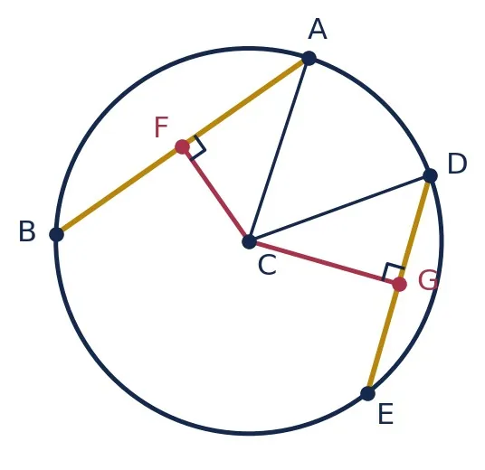
| Statement | Reason |
|---|---|
| F and G are the midpoints of AB and DE. | perpendicular from the centre bisects the chord |
| ∴ AF = ½ AB and DG = ½ DE | from the above |
| AB > DE, so AF > DG, and therefore AF² > DG² | halves of a bigger length are bigger |
| In right △CFA: CA² = CF² + AF² | Baudhāyana–Pythagoras theorem |
| In right △CGD: CD² = CG² + DG² | Baudhāyana–Pythagoras theorem |
| CA = CD, both being radii, so CF² + AF² = CG² + DG² | equating the two |
| ∴ CF² = CG² + DG² − AF² | rearranging |
| Since AF² > DG², the quantity (DG² − AF²) is negative | from step 3 |
| ∴ CF² < CG², and so CF < CG | lengths are positive |
Hence proved.
Two limiting cases worth remembering
Push a chord towards the centre and it grows; the largest chord is the one through the centre (the diameter, at distance 0). Push it away and it shrinks; when its distance equals the radius it has shrunk to a single point of length 0.
The chord-length formula. From the right triangle formed by the radius, the distance d and half the chord:
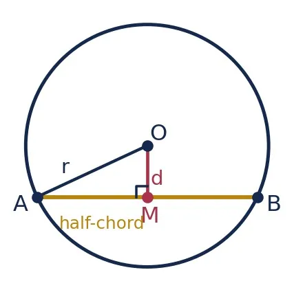
Angles subtended by an arc
Arc. An arc is a connected piece of the circle: a portion of the curved boundary. Two points A and B on a circle cut it into two arcs. The bigger one is the major arc and the smaller one is the minor arc. To say which one we mean, we name a third point on it: arc AXB means the arc from A to B that passes through X.
Angle subtended by an arc at the centre. Sweep the radius from OA round to OB, travelling along the arc we are interested in, and measure the angle swept. If that angle is less than 180° the arc is a minor arc; if it is more than 180° it is a major arc.
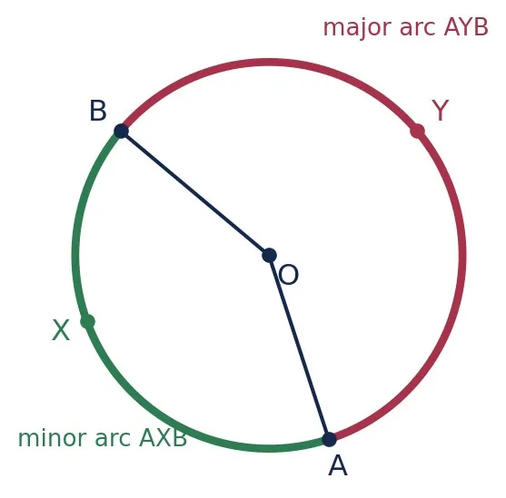
Angle subtended by an arc at a point on the circle. Take any point D on the circle that is not on the arc AXB, and join DA and DB. The angle ∠ADB is the angle subtended by arc AXB at D. The remarkable fact is that this angle is exactly the same wherever D is chosen, so long as D stays off the arc.
Theorem 9: angle at the centre is double the angle at the circle
Statement: The angle subtended by an arc at the centre of the circle is double the angle subtended by the same arc at any point on the circle outside the arc.
Given: An arc AFB of a circle with centre C. D is a point on the circle, not on arc AFB. To prove: ∠BCA = 2 ∠BDA.
Construction: Join D to C and extend DC to meet the circle again at E.
Case 1: E lies on the arc AFB
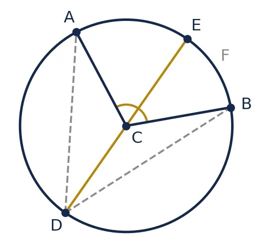
| Statement | Reason |
|---|---|
| In △DCB, CB = CD | both are radii |
| ∴ ∠CBD = ∠CDB | angles opposite equal sides |
| ∠BCE is an exterior angle of △BCD | DCE is a straight line |
| ∴ ∠BCE = ∠CBD + ∠CDB = 2∠BDC | exterior angle = sum of interior opposite angles |
| Similarly, in △ADC, CA = CD, so ∠CAD = ∠CDA | both are radii |
| ∴ ∠ACE = ∠CAD + ∠CDA = 2∠CDA | exterior angle theorem again |
| Now ∠BCA = ∠BCE + ∠ECA | the two angles together make ∠BCA |
| ∴ ∠BCA = 2∠BDC + 2∠CDA = 2(∠BDC + ∠CDA) | substituting |
| ∴ ∠BCA = 2 ∠BDA | since ∠BDC + ∠CDA = ∠BDA |
Case 2: E lies outside the arc AFB
The same two exterior-angle results still hold, but now the angles are subtracted instead of added.
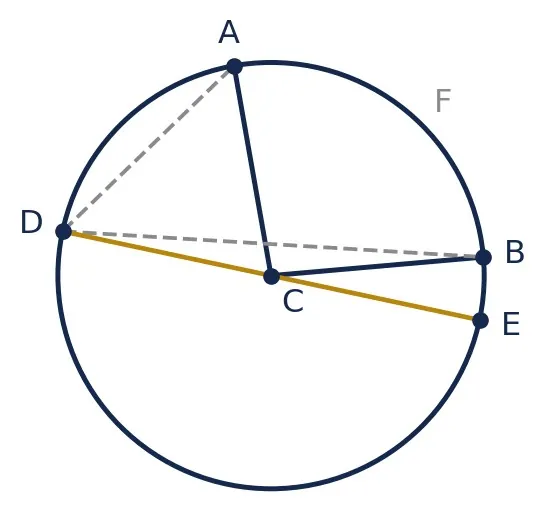
| Statement | Reason |
|---|---|
| ∠ACE = ∠ADC + ∠CAD = 2∠ADC | exterior angle of isosceles △ACD, where CA = CD |
| ∠BCE = ∠BDC + ∠CBD = 2∠BDC | exterior angle of isosceles △BCD, where CB = CD |
| ∠ACB = ∠ACE − ∠BCE | from the figure |
| ∴ ∠ACB = 2∠ADC − 2∠BDC = 2(∠ADC − ∠BDC) | substituting |
| ∴ ∠ACB = 2 ∠ADB | since ∠ADC − ∠BDC = ∠ADB |
Hence proved.
⭐ The big consequence: angles in the same segment
The angle at the centre is fixed once the arc is fixed. So every point D on the circle outside that arc gives ∠ADB = ½ (angle at the centre): the same value every time. In short: angles subtended by the same arc at any points on the remaining part of the circle are all equal. This is used constantly in problems.
Corollary: the angle in a semicircle is 90°
Statement: The angle subtended by a diameter at any point on the circle is 90°.
What a corollary is: a fact that follows immediately from a result already proved; you get it almost free, with one extra line of reasoning.
Given: AB is a diameter of a circle with centre C, and D is any point on the circle. To prove: ∠ADB = 90°.
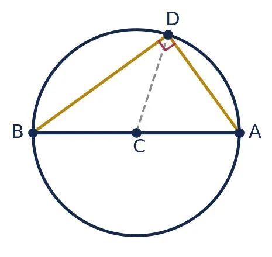
| Statement | Reason |
|---|---|
| Take the arc from A to B not containing D. | choice of arc |
| The angle this arc subtends at the centre is ∠ACB. | definition |
| A, C, B lie on one straight line, so ∠ACB = 180°. | AB is a diameter through the centre C |
| ∠ADB = ½ ∠ACB | Theorem 9 |
| ∴ ∠ADB = ½ × 180° = 90° | substituting |
Hence proved.
Concyclicity and cyclic quadrilaterals
Concyclic points. Points that all lie on one circle are called concyclic. Any three non-collinear points are automatically concyclic (Theorem 1). Four points are special: they need not lie on a circle. Theorem 10 tells us exactly when they do.
Theorem 10: equal angles on the same side ⇒ the four points are concyclic
Statement: If a line segment AB joining two points A, B subtends equal angles at two other points C, D lying on the same side of AB, then the four points lie on a circle.
Given: Segment AB; points C and D on the same side of AB, neither on line AB; and ∠ACB = ∠ADB. To prove: A, B, C, D are concyclic.
Method: proof by contradiction. Draw the circle through A, B, C (possible by Theorem 1, since they are non-collinear) and show that D cannot be off this circle.
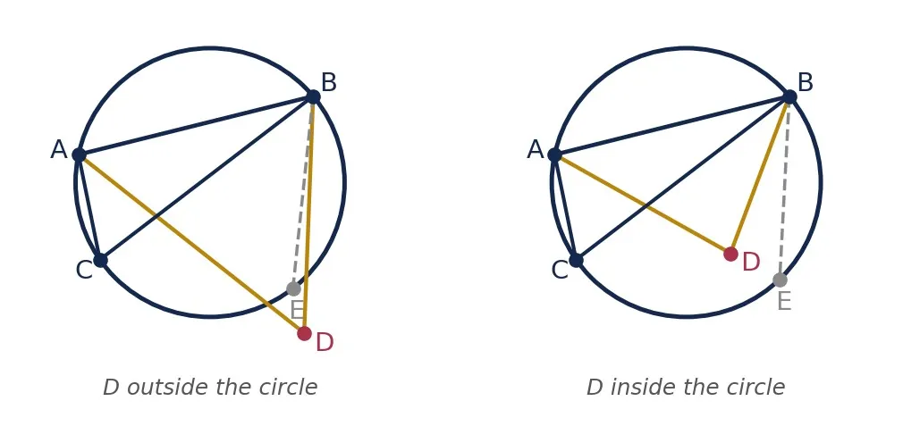
| Statement | Reason |
|---|---|
| Case 1: suppose D lies outside the circle. | assumption to be disproved |
| Then AD cuts the circle at a point E, and E lies between A and D. | D is outside |
| ∠AEB = ∠ACB | angles in the same segment (Theorem 9) |
| ∠AEB is an exterior angle of △BED | E lies on AD |
| ∴ ∠AEB > ∠ADB | exterior angle > interior opposite angle |
| ∴ ∠ACB > ∠ADB | substituting ∠AEB = ∠ACB |
| But ∠ACB = ∠ADB is given, so ∠ACB > ∠ACB. | impossible |
| ∴ D cannot lie outside the circle. | contradiction |
| Case 2: suppose D lies inside the circle. | assumption to be disproved |
| Extend AD to meet the circle at E. Now ∠ADB is the exterior angle of △BED. | D is inside |
| ∴ ∠ADB > ∠AEB = ∠ACB, again contradicting ∠ACB = ∠ADB. | same argument reversed |
| ∴ D lies neither outside nor inside: D must be on the circle. | only case left |
Hence proved.
Cyclic quadrilateral. A quadrilateral (also called a 4-gon) whose four vertices are concyclic is called a cyclic quadrilateral. It is a quadrilateral that can be inscribed in a circle.
Theorem 11: opposite angles of a cyclic quadrilateral add to 180°
Statement: The sum of two opposite angles of a cyclic quadrilateral is 180°.
Given: A cyclic quadrilateral ABCD with the circle’s centre at O. To prove: ∠BAD + ∠BCD = 180°.
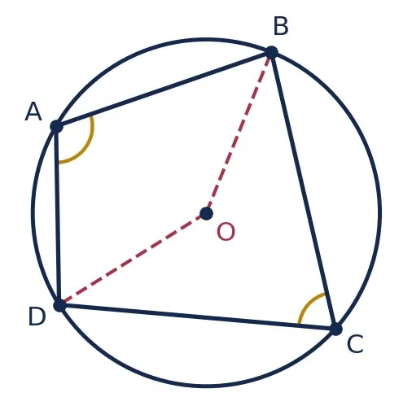
| Statement | Reason |
|---|---|
| A lies on the circle, outside arc BCD. | from the figure |
| ∴ ∠BAD = ½ (reflex ∠BOD), the angle of arc BCD at the centre | Theorem 9, sweeping from OB to OD via C |
| C lies on the circle, outside arc BAD. | from the figure |
| ∴ ∠BCD = ½ (∠BOD), the angle of arc BAD at the centre | Theorem 9, sweeping from OB to OD via A |
| Adding: ∠BAD + ∠BCD = ½ (reflex ∠BOD + ∠BOD) | adding the two results |
| The two angles at O together make one complete turn = 360°. | angles round a point |
| ∴ ∠BAD + ∠BCD = ½ × 360° = 180° | substituting |
| Similarly ∠ABC + ∠ADC = 180°. | the same argument on the other pair |
Hence proved.
Theorem 12: if opposite angles add to 180°, the quadrilateral is cyclic (converse of Theorem 11)
Statement: If two opposite angles of a quadrilateral add up to 180°, then its vertices lie on a circle.
Given: Quadrilateral ABCD with ∠BAD + ∠BCD = 180°. To prove: ABCD is cyclic.
Method: proof by contradiction, as in Theorem 10. A, B, D are non-collinear, so draw the circle through A, B and D, then show C must lie on it. We work through the case where C is outside; the case where C is inside is exactly similar.
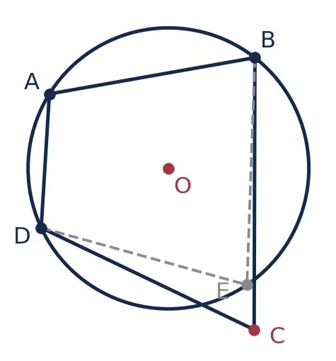
| Statement | Reason |
|---|---|
| Suppose C lies outside the circle through A, B, D. | assumption to be disproved |
| Then DC cuts the circle at a point E, with E between D and C. | C is outside |
| ABED is a cyclic quadrilateral. | A, B, E, D all lie on the circle |
| ∴ ∠BAD + ∠BED = 180° | Theorem 11 |
| But ∠BAD + ∠BCD = 180° is given. | given |
| ∴ ∠BED = ∠BCD | both make 180° with the same angle |
| However ∠BED is an exterior angle of △BEC | E lies on DC |
| ∴ ∠BED > ∠BCE, that is ∠BED > ∠BCD | exterior angle > interior opposite angle |
| This contradicts ∠BED = ∠BCD. | impossible |
| ∴ C is not outside; similarly C is not inside; so C lies on the circle. | conclusion |
Hence proved.
Test yourself
A quick check on the main results. Tap an option to see the right answer and the reason.
1. How many circles pass through three non-collinear points?
Theorem 1: the perpendicular bisectors meet at one point only.
2. A chord is 5 cm from the centre of a circle of radius 13 cm. Its length is…
Half chord = √(169 − 25) = 12, so chord = 24 cm.
3. An arc subtends 70° at the centre. At a point on the remaining part of the circle it subtends…
Theorem 9: angle at the centre = 2 × angle at the circle.
4. The angle in a semicircle is…
The diameter subtends 180° at the centre, so 90° on the circle.
5. In a cyclic quadrilateral ABCD, ∠A = 75°. Then ∠C is…
Opposite angles add to 180° (Theorem 11).
6. Of two chords of a circle, the longer one is…
Theorem 8: the longer chord is nearer the centre.
7. The circumcentre of a right-angled triangle lies…
The hypotenuse is a diameter of the circumcircle.
8. Parallel chords of 6 cm and 8 cm lie on opposite sides of the centre of a circle of radius 5 cm. The distance between them is…
Distances are 4 cm and 3 cm; on opposite sides they add.
9. Which parallelogram can be inscribed in a circle?
Opposite angles must be equal and add to 180°, so each is 90°.
10. The perpendicular from the centre to a chord…
Theorem 5 (RHS congruence).
Complete solutions
Tap a question to see its full solution.
Think and Reflect (page 94)
1Rotational and reflection symmetries of a square, regular pentagon, regular hexagon.
Regular pentagon: rotational symmetry of order 5 (turns of 72°, 144°, 216°, 288°, 360°) and 5 lines of reflection symmetry.
Regular hexagon: rotational symmetry of order 6 (turns of 60°, 120°, …, 360°) and 6 lines of reflection symmetry.
In general a regular n-sided polygon has rotational symmetry of order n and n lines of reflection symmetry. A circle is the limiting case: infinitely many of each.
2Longest and smallest chord in a circle of radius 5 units.
Smallest chord: there is none. As a chord is pushed further from the centre its length gets smaller and smaller, coming as close to 0 as we like, but it never reaches a smallest positive value; once the length is 0 it is only a point, not a chord.
3Locus of points equidistant from two given points.
Think and Reflect (page 95)
1How many circles pass through two points on a plane?
2Circles of all possible radii? Smallest and largest radius?
3Moving away from AB along the perpendicular bisector: do the radii increase or decrease?
4Does the circle look more curved or less curved?
5How many squares with A and B on the boundary? With A and B as corners?
As corners: exactly 3. Either AB is a side of the square (giving 2 squares, one on each side of AB), or AB is a diagonal of the square (giving 1 more).
Exercise Set 5.1
1△ABC with AB = 5 cm, ∠A = 70°, ∠B = 60°. Draw the circumcircle. Is the centre inside or outside?
Construction: draw AB = 5 cm; at A draw a 70° ray and at B a 60° ray; they meet at C. Draw the perpendicular bisectors of any two sides; they meet at O. With centre O and radius OA, draw the circle.
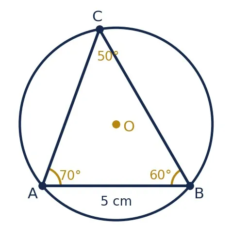
2△ABC with AB = 5 cm, ∠A = 100°, AC = 4 cm. Draw the circumcircle. Is the centre inside or outside?
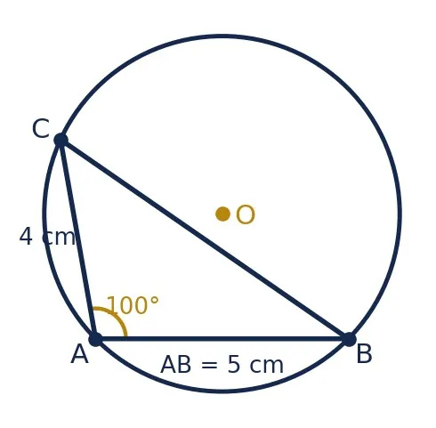
3△ABC with AB = 6 cm, BC = 7 cm, CA = 7 cm. Find the circumcentre O and measure OA, OB, OC.
Checking by calculation: the triangle is isosceles with CA = CB = 7 and base AB = 6. Its height from C is √(7² − 3²) = √40 = 2√10 cm, so its area = ½ × 6 × 2√10 = 6√10 cm².
Using R = (product of the three sides) ÷ (4 × area): R = (6 × 7 × 7) ÷ (4 × 6√10) = 294 ÷ 24√10 ≈ 3.87 cm.
Answer: OA = OB = OC ≈ 3.9 cm. The triangle is acute, so O lies inside it.
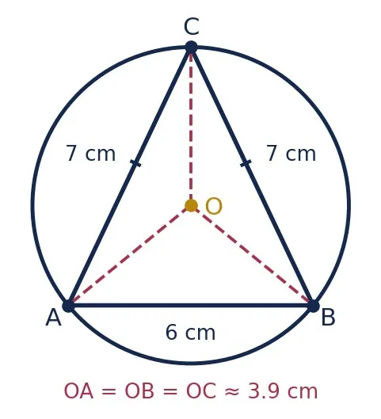
4What is the least possible radius of a circle through two points A and B?
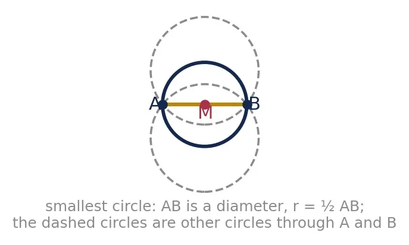
Think, Draw and Infer (page 98)
1A, B, C collinear: is there a point P with PA = PB = PC?
Therefore: no circle can pass through three collinear points, since such a circle would need a centre equidistant from all three.
Can a line cut a circle in three points? No. A line meets a circle in at most two points; if it met it in three, those three collinear points would lie on a circle, which we have just shown to be impossible.
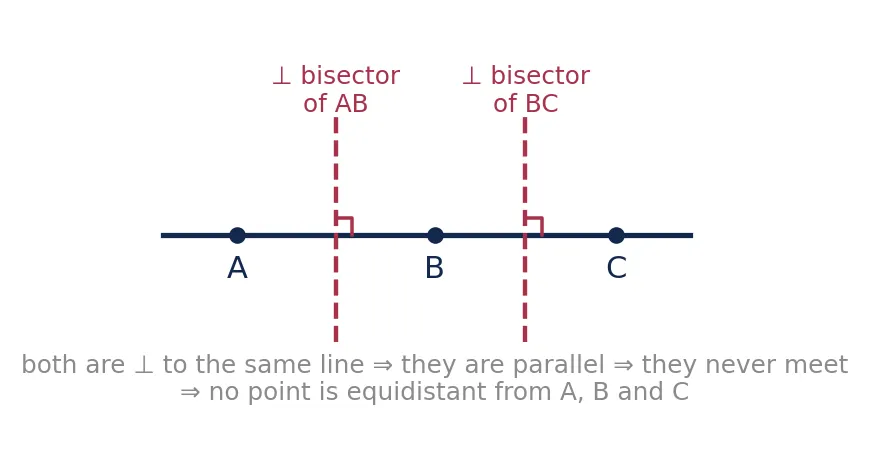
2Can other triangles congruent to △ABC share the same circumcircle?
Exercise Set 5.2
1Show that the triangle formed by a chord and the centre of a circle is isosceles.
Extra consequence: the base angles are equal, ∠CAB = ∠CBA.
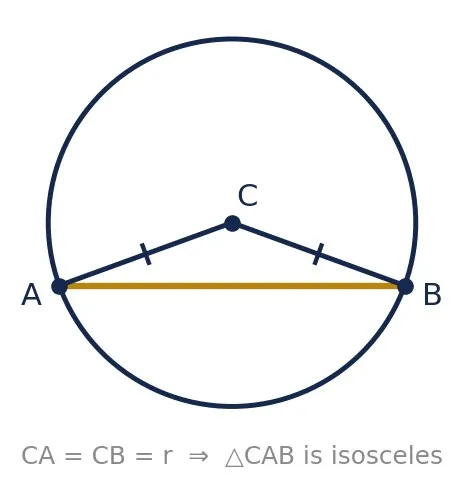
2Show that two such isosceles triangles with equal base lengths are congruent.
| Statement | Reason |
|---|---|
| CA = CD | both are radii of the circle |
| CB = CE | both are radii of the circle |
| AB = DE | given (equal bases) |
| ∴ △CAB ≅ △CDE | by SSS congruence |
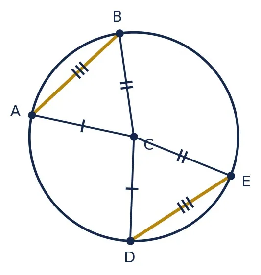
Exercise Set 5.3
1Why is the converse of Theorem 4 true: why does the perpendicular from the centre bisect the chord?
| Statement | Reason |
|---|---|
| ∠CMA = ∠CMB = 90° | given |
| CA = CB | both are radii (these are the hypotenuses) |
| CM = CM | common side |
| ∴ △CMA ≅ △CMB | by RHS congruence |
| ∴ AM = BM, so M is the midpoint of AB | CPCT |
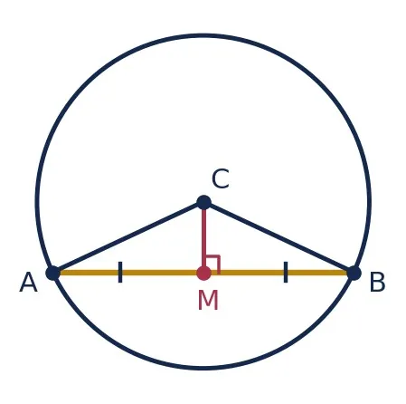
2Isosceles △ABC inscribed in a circle with AB = AC. Show the altitude from A to BC passes through the centre.
The centre O is equidistant from B and C as well (OB = OC, both radii), so O also lies on the perpendicular bisector of BC.
In an isosceles triangle the altitude from the apex A to the base BC is itself the perpendicular bisector of BC. Since O lies on that line, the altitude from A passes through the centre O.
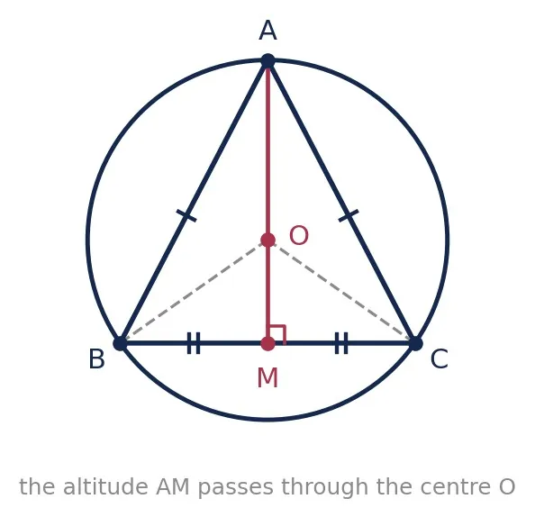
3Two parallel chords of lengths 6 cm and 8 cm lie on opposite sides of the centre. Radius = 5 cm. Find the distance between their midpoints.
For the 8 cm chord: half of it is 4 cm, so its distance from the centre is √(5² − 4²) = √9 = 3 cm.
Since the chords are on opposite sides of the centre, the distances add: 4 + 3 = 7 cm. Answer: 7 cm.
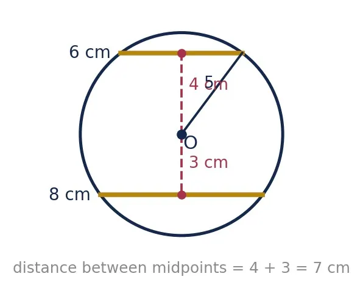
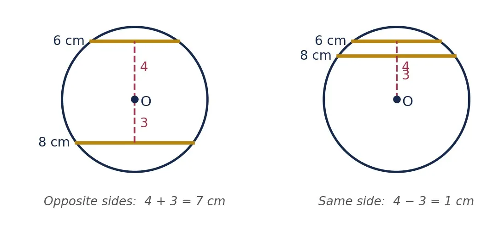
Exercise Set 5.4
1Use the Baudhāyana–Pythagoras theorem to show why Theorem 6 must be true.
Therefore d² + (L/2)² = r², which gives d = √(r² − L²/4).
The right-hand side depends only on r and L. So two chords of the same length L in the same circle must have exactly the same distance d from the centre, which is Theorem 6.
2In Fig. 5.15, CE ⊥ AB, CH ⊥ GF and CE = CH. Show that AB = GF.
| Statement | Reason |
|---|---|
| ∠CEA = ∠CHF = 90° | given, CE ⊥ AB and CH ⊥ GF |
| CA = CF | both are radii (the hypotenuses) |
| CE = CH | given |
| ∴ △CEA ≅ △CHF | by RHS congruence |
| ∴ AE = FH | CPCT |
| AB = 2 AE and GF = 2 FH | perpendicular from the centre bisects the chord |
| ∴ AB = GF | doubling equals |
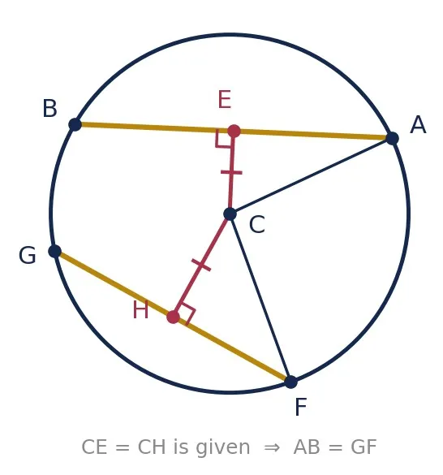
3Solve the previous question using the Baudhāyana–Pythagoras theorem.
Now CA = CF (radii) and CE = CH (given), so the two right-hand sides are equal. Hence AE² = FH², giving AE = FH.
Doubling: AB = 2AE = 2FH = GF.
Exercise Set 5.5
1Radius 7 cm, perpendicular distance 6 cm. Find the chord length.
Chord = 2√13 ≈ 7.2 cm.
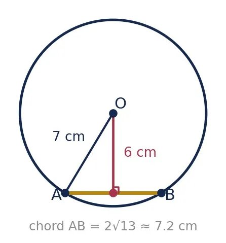
2Explain why the chord length is 2√(r² − d²).
By Theorem 5, M is the midpoint of AB, so AM = ½ AB.
△OMA is right-angled at M, with hypotenuse OA = r. By the Baudhāyana–Pythagoras theorem: AM² = OA² − OM² = r² − d², so AM = √(r² − d²).
Therefore AB = 2 AM = 2√(r² − d²).
*3If the distance of chord AB from the centre is twice that of chord CD, can we conclude CD = 2 AB?
Counter-example: take r = 5 cm, with CD at distance 1.5 cm and AB at distance 3 cm (twice as far). CD = 2√(25 − 2.25) = 2√22.75 ≈ 9.54 cm, AB = 2√(25 − 9) = 2√16 = 8 cm. Here CD ÷ AB ≈ 1.19, which is nowhere near 2.
What we can safely conclude: CD > AB; the chord nearer the centre is the longer one (Theorem 8).
Exercise Set 5.6
1Central angle ∠AOB = 60°, radius 12 cm. Find the chord AB.
Therefore AB = OA = 12 cm.
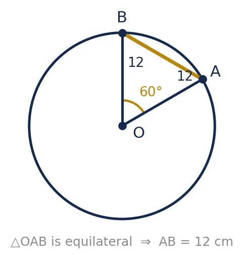
2A and B are two points on a circle with centre O. (i) Can ∠AXB and ∠AYB differ when X, Y are on the same side of AB? (ii) Do equal angles mean X and Y are on the same side? (iii) If so, does the circle through A, B, X pass through Y?
(ii) Yes, in general. If X and Y were on opposite sides of AB then AXBY would be a cyclic quadrilateral and ∠AXB + ∠AYB = 180°, so equal angles would force each to be 90°. Apart from that one special case (when AB is a diameter), equal angles do mean X and Y are on the same side.
(iii) Yes. If ∠AXB = ∠AYB with X and Y on the same side of AB, then by Theorem 10 the four points A, B, X, Y are concyclic. Since only one circle passes through A, B and X (Theorem 1), that circle must also pass through Y.
3Find x in Fig. 5.26, where the angle at D is 100°.
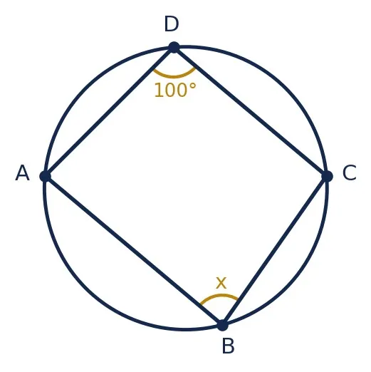
End-of-chapter exercises (1–26)
Questions marked * are the harder ones. Tap a question to see its solution.
1Chord 5 cm from the centre; radius 13 cm. Find the chord length.
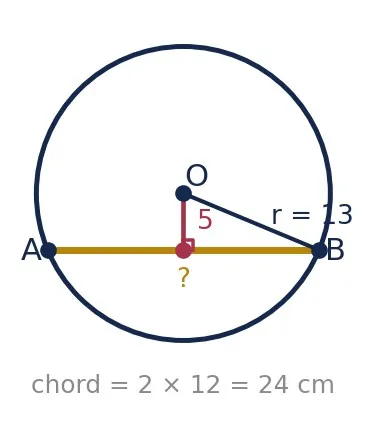
2An arc subtends 70° at the centre. What angle does it subtend at a point on the circle?
3Diameter 26 cm, chord 24 cm. Find the distance of the chord from the centre.
d = √(r² − (half chord)²) = √(169 − 144) = √25. Answer: 5 cm.
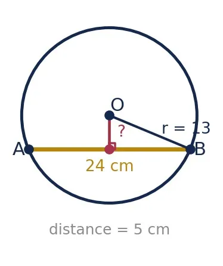
4Radius 15 cm, chord at distance 9 cm. Find the chord length.
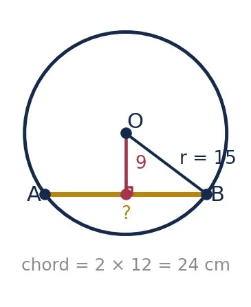
5Prove that the perpendicular bisector of a chord passes through the centre.
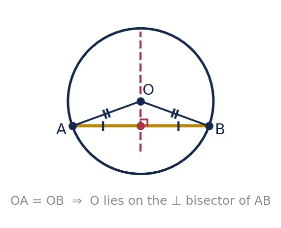
6AB is a diameter and C is on the circumference. Find ∠ACB.
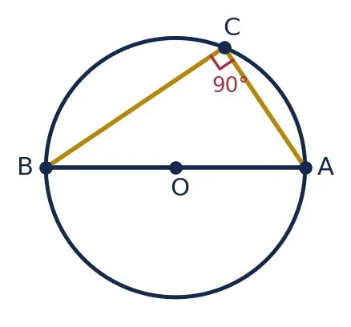
7Cyclic quadrilateral ABCD. If ∠A = 75°, find ∠C. If ∠B = 110°, find ∠D.
∠C = 180° − 75° = 105°. ∠D = 180° − 110° = 70°.
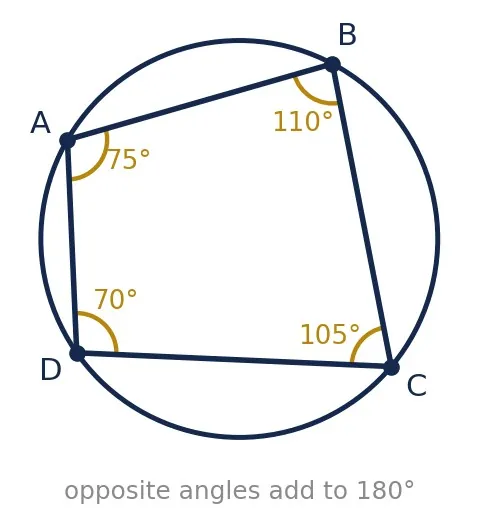
8PQRS is cyclic with ∠P = (2x + 10)° and ∠R = (3x − 20)°. Find x, ∠P and ∠R.
(2x + 10) + (3x − 20) = 180 → 5x − 10 = 180 → 5x = 190 → x = 38
∠P = 2(38) + 10 = 86°. ∠R = 3(38) − 20 = 94°. Check: 86° + 94° = 180° ✓
9A chord of length 16 cm is 6 cm from the centre. Find the radius.
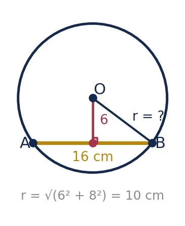
10A cyclic quadrilateral has sides 5, 5, 12, 12 units. Find its area.
s = (5 + 5 + 12 + 12) ÷ 2 = 34 ÷ 2 = 17
Area = √((17−5)(17−5)(17−12)(17−12)) = √(12 × 12 × 5 × 5) = 12 × 5. Answer: 60 square units.
A neat check: this quadrilateral is a kite (two pairs of equal adjacent sides). A cyclic kite has two right angles, and it splits into two right triangles with legs 5 and 12, each of area 30, giving 60 in total. The diagonal joining the two right angles is √(25+144) = 13, the diameter of the circumcircle.
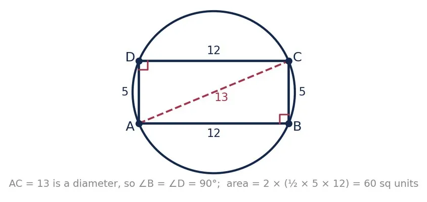
*11How can we tell whether the circumcentre of a cyclic quadrilateral lies inside it, without drawing the circle?
- If every side subtends an acute angle (less than 90°) at the opposite vertices, then every arc cut off by a side is less than a semicircle, and the centre lies inside the quadrilateral.
- If one side subtends a right angle, that side is a diameter and the centre lies exactly on that side.
- If one side subtends an obtuse angle (more than 90°), the arc it cuts off is more than a semicircle, and the centre lies outside the quadrilateral, on the far side of that particular side.
Best practical method: construct the perpendicular bisectors of two of the sides; where they cross is the circumcentre, and you can see at a glance whether that point is inside or outside.
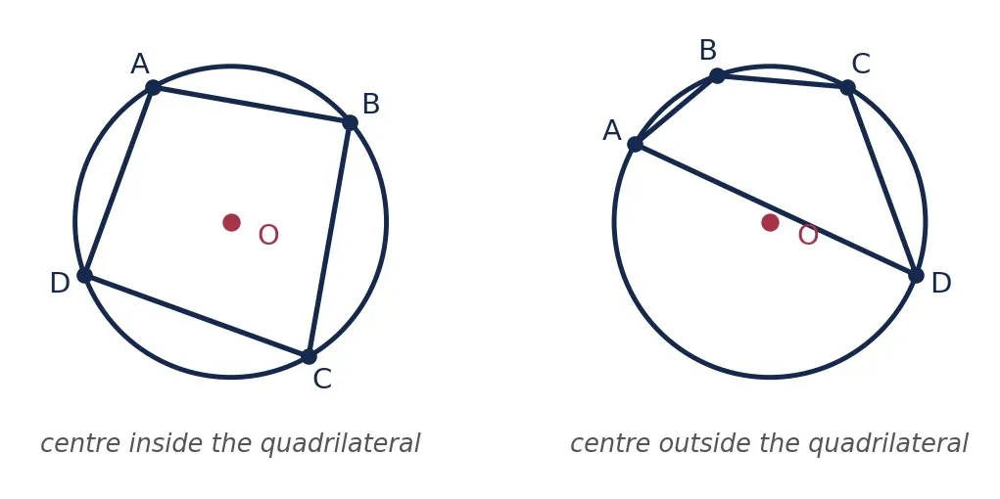
*12Two equal chords intersect. Show that the segments of one equal the corresponding segments of the other.
| Statement | Reason |
|---|---|
| OM ⊥ AB and ON ⊥ CD | line from centre to midpoint of a chord (Theorem 4) |
| OM = ON | equal chords are equidistant from the centre (Theorem 6) |
| In △OMP and △ONP: ∠OMP = ∠ONP = 90° | from the first line |
| OP = OP | common hypotenuse |
| OM = ON | proved above |
| ∴ △OMP ≅ △ONP | by RHS congruence |
| ∴ MP = NP … (1) | CPCT |
| AM = ½ AB = ½ CD = CN … (2) | M, N are midpoints of equal chords |
| AP = AM + MP and CP = CN + NP | adding along each chord |
| ∴ AP = CP | adding (1) and (2) |
| Also BP = AB − AP = CD − CP = DP | subtracting from equal totals |
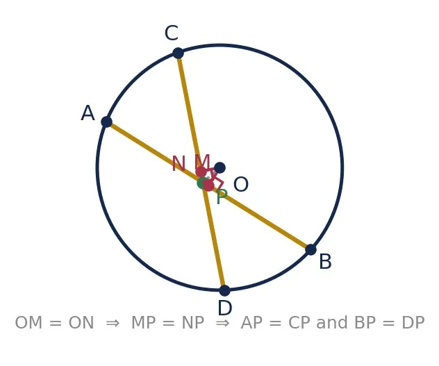
*13Draw a circle in which a chord of length 6 cm is at a distance of 3 cm from the centre.
Steps of construction: (1) Draw AB = 6 cm. (2) Construct the perpendicular bisector of AB, meeting it at M. (3) On this bisector mark O with OM = 3 cm. (4) With centre O and radius OA (= 3√2 ≈ 4.2 cm), draw the circle. AB is then a chord of the required kind.
About the hint: yes, this circle is the circumcircle of the isosceles triangle OAB, and indeed of any triangle inscribed in it having AB as a side.
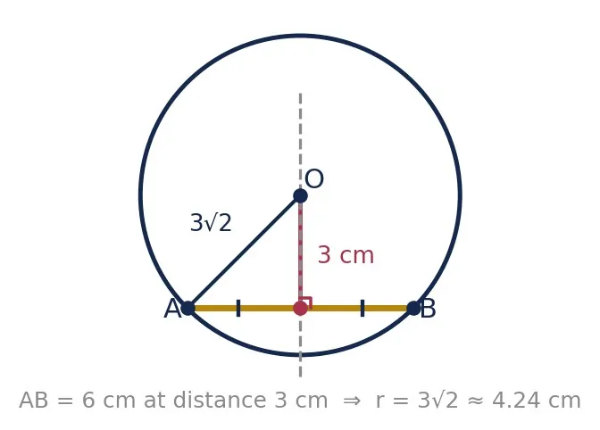
*14Show that a rectangle is the only parallelogram that can be inscribed in a circle.
| Statement | Reason |
|---|---|
| ∠A = ∠C | opposite angles of a parallelogram are equal |
| ∠A + ∠C = 180° | opposite angles of a cyclic quadrilateral (Theorem 11) |
| ∴ ∠A + ∠A = 180°, so 2∠A = 180° | substituting |
| ∴ ∠A = 90°, and hence ∠C = 90° | dividing by 2 |
| Similarly ∠B = ∠D = 90° | the same argument on the other pair |
| ∴ all four angles are right angles, so ABCD is a rectangle | definition of a rectangle |
*15If a rectangle is inscribed in a circle, show that its diagonals meet at the centre.
Alternatively: the diagonals of a rectangle bisect each other, so they meet at their common midpoint; and the midpoint of a diameter is the centre.
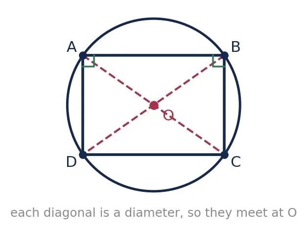
*16What shape is formed by the midpoints of all chords of a fixed length?
Reason: let the fixed chord length be L and the radius r. Every such chord is at distance d = √(r² − L²/4) from the centre (Theorem 6), and its midpoint is exactly the foot of the perpendicular from the centre. So every one of these midpoints is at the same fixed distance d from the centre, and the set of points at a fixed distance from a fixed point is a circle of radius d.
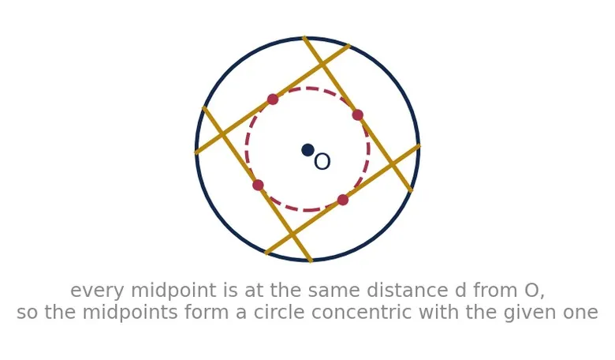
*17Chords AB and AC are congruent. Explain why the centre lies on the bisector of ∠BAC.
| Statement | Reason |
|---|---|
| In △OAB and △OAC: OB = OC | both are radii |
| AB = AC | given |
| OA = OA | common side |
| ∴ △OAB ≅ △OAC | by SSS congruence |
| ∴ ∠OAB = ∠OAC | CPCT |
| ∴ AO bisects ∠BAC, so O lies on the bisector of ∠BAC | definition of an angle bisector |
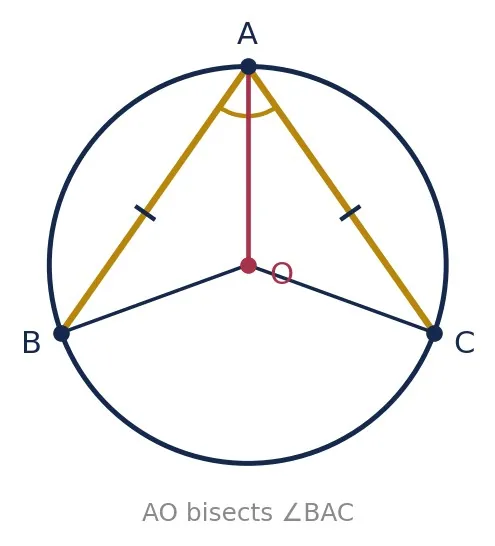
18Two parallel chords of lengths 10 cm and 24 cm lie on the same side of the centre, 7 cm apart. Find the radius.
Distance of the 10 cm chord from the centre: d₁ = √(r² − 25). Distance of the 24 cm chord: d₂ = √(r² − 144).
The 24 cm chord is longer, so it is nearer the centre. As both are on the same side, the distances subtract: d₁ − d₂ = 7 … (1)
Also d₁² − d₂² = (r² − 25) − (r² − 144) = 119. Since d₁² − d₂² = (d₁ − d₂)(d₁ + d₂), we get 7 (d₁ + d₂) = 119, so d₁ + d₂ = 17 … (2)
Adding (1) and (2): 2d₁ = 24, so d₁ = 12. Then d₂ = 5. Finally r² = d₁² + 25 = 144 + 25 = 169. Answer: r = 13 cm.
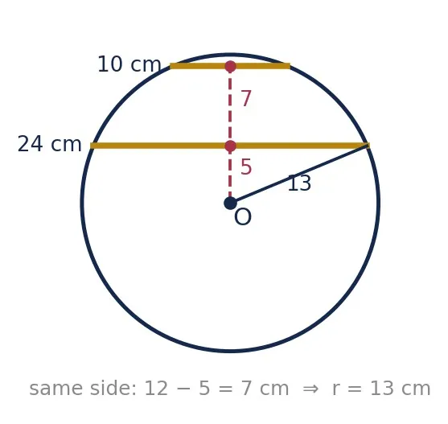
*19A regular hexagon is inscribed in a circle of radius r. Find its side and the distance of each side from the centre.
The distance of the side from the centre is the perpendicular from O to AB, which bisects AB, giving a right triangle with hypotenuse r and one leg r/2: distance = √(r² − (r/2)²) = √(3r²/4). Distance of each side from the centre: (√3 / 2) r ≈ 0.87 r.
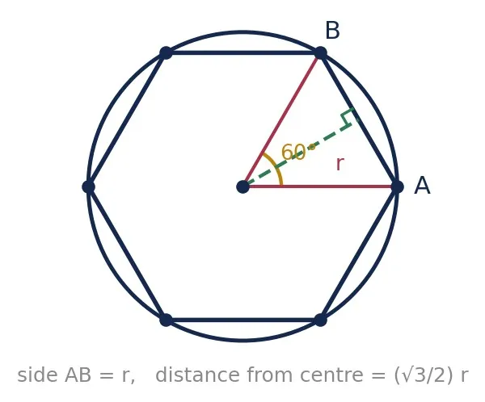
20Quadrilateral MNOP is inscribed in a circle with MN a diameter. What can you say about ∠MOP and ∠MNP?
Using the diameter as well: since MN is a diameter, the angle it subtends at any point of the circle is 90°. So ∠MON = 90° and ∠MPN = 90°: the angles at O and at P standing on MN are both right angles.
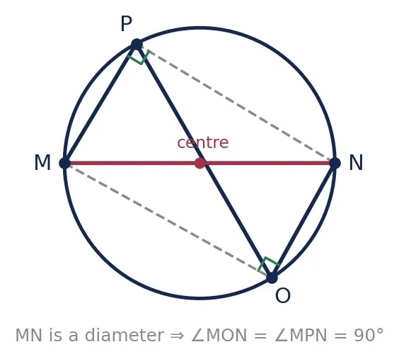
21Show that the exterior angle of a cyclic quadrilateral equals the interior opposite angle.
| Statement | Reason |
|---|---|
| ∠CDE + ∠ADC = 180° | linear pair, since CDE is a straight line |
| ∠ABC + ∠ADC = 180° | opposite angles of a cyclic quadrilateral (Theorem 11) |
| ∴ ∠CDE + ∠ADC = ∠ABC + ∠ADC | both equal 180° |
| ∴ ∠CDE = ∠ABC | cancelling ∠ADC from both sides |
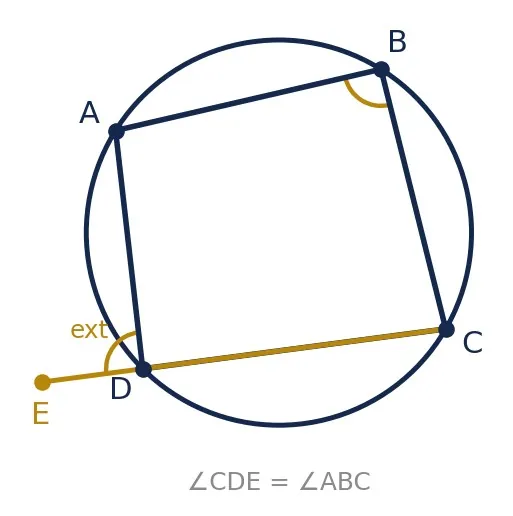
*22Justify: “There is no chord of a circle longer than its diameter.”
Method 2 (triangle inequality): for any chord AB, join OA and OB. If O is not on AB then AB < OA + OB = 2r. If O is on AB then AB = 2r exactly. So no chord exceeds 2r.
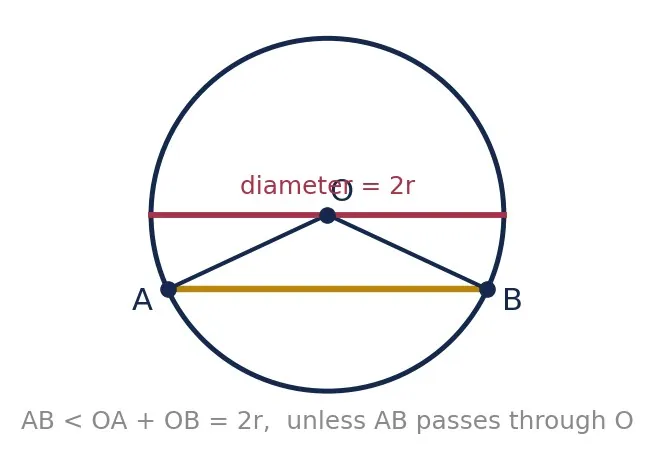
*23A is a point inside a circle with centre O. Show that the shortest chord through A is the one perpendicular to OA.
Let a chord through A have foot of perpendicular M from O. Then △OMA is right-angled at M (or M coincides with A), so OM ≤ OA, with equality only when M and A are the same point.
So the greatest possible value of d is OA itself, achieved exactly when the foot of the perpendicular is A, that is, when OA ⊥ the chord.
Conclusion: the shortest chord through A is the one perpendicular to OA, and its length is 2√(r² − OA²).
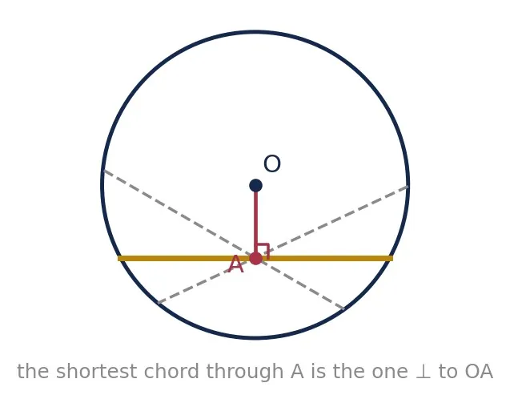
24Use Fig. 5.30 to justify that the angle in a semicircle is 90°.
| Statement | Reason |
|---|---|
| OA = OB, both radii, so △OAB is isosceles | radii of the same circle |
| ∴ ∠OAB = ∠OBA = a | base angles of an isosceles triangle |
| OA = OC, both radii, so △OAC is isosceles | radii of the same circle |
| ∴ ∠OAC = ∠OCA = b | base angles of an isosceles triangle |
| In △ABC: ∠BAC + ∠ABC + ∠ACB = 180° | angle sum of a triangle |
| ∠BAC = ∠OAB + ∠OAC = a + b | the two parts make up the angle at A |
| ∴ (a + b) + a + b = 180° | substituting |
| ∴ 2(a + b) = 180°, so a + b = 90° | dividing by 2 |
| ∴ ∠BAC = a + b = 90° | the angle in a semicircle |
*25Chords CC′ and DD′ are perpendicular to a diameter AB. Prove that MM′ (joining the midpoints of CD and C′D′) is perpendicular to AB.
That means C and C′ are mirror images of each other in the line AB. For the same reason, D and D′ are mirror images in AB.
Reflection in a line preserves lengths and midpoints. So the segment C′D′ is the mirror image of CD, and therefore M′ (the midpoint of C′D′) is the mirror image of M (the midpoint of CD).
Finally, the segment joining any point to its mirror image is always perpendicular to the mirror line. Therefore MM′ ⊥ AB.
*26Use Fig. 5.31 to justify that opposite angles of a cyclic quadrilateral add to 180°.
Let the base angles be: p at A and at B in △OAB; q at B and at C in △OBC; u at C and at D in △OCD; v at D and at A in △ODA.
The four angles of quadrilateral ABCD are made from these pieces: ∠A = p + v, ∠B = p + q, ∠C = q + u, ∠D = u + v.
Adding all four: ∠A + ∠B + ∠C + ∠D = 2(p + q + u + v). But the angle sum of any quadrilateral is 360°, so 2(p + q + u + v) = 360°, giving p + q + u + v = 180°.
Now ∠A + ∠C = (p + v) + (q + u) = p + q + u + v = 180°. Similarly ∠B + ∠D = (p + q) + (u + v) = 180°. So the opposite angles are supplementary.
One-page revision sheet
Definitions
- Circle: all points of a plane at a fixed distance (the radius) from a fixed point (the centre).
- Chord: a segment joining two points of the circle. Diameter: a chord through the centre; it is the longest chord and equals 2r.
- Arc: a piece of the circle. Two points give a minor arc and a major arc.
- Concyclic points: points lying on one circle. Cyclic quadrilateral: a quadrilateral whose vertices are concyclic.
- Circumcircle: the circle through the three vertices of a triangle; its centre is the circumcentre.
The twelve theorems at a glance
| No. | Theorem |
|---|---|
| T1 | Exactly one circle passes through three non-collinear points. |
| T2 | Equal chords subtend equal angles at the centre. (SSS) |
| T3 | Equal angles at the centre give equal chords. (SAS), converse of T2 |
| T4 | Centre to the midpoint of a chord is perpendicular to it. (SSS) |
| T5 | The perpendicular from the centre bisects the chord. (RHS), converse of T4 |
| T6 | Equal chords are equidistant from the centre. (RHS) |
| T7 | Chords equidistant from the centre are equal. (RHS), converse of T6 |
| T8 | Of two unequal chords, the longer one is nearer the centre. |
| T9 | Angle at the centre = 2 × angle at any point of the circle on the remaining part. |
| Cor. | The angle in a semicircle is 90°. |
| T10 | Equal angles on the same side of a segment ⇒ the four points are concyclic. |
| T11 | Opposite angles of a cyclic quadrilateral add to 180°. |
| T12 | If opposite angles add to 180°, the quadrilateral is cyclic, converse of T11 |
Formulas you must know
⚠️ Common traps in the exam
- Parallel chords on opposite sides of the centre: add the two distances. On the same side: subtract them.
- Chord length is not proportional to distance: always go back to r² = d² + (½ chord)².
- Angles in the same segment are equal only when the points are on the same side of the chord.
- Three collinear points have no circle through them: the perpendicular bisectors are parallel.
- In any proof, write Given, To prove, Construction (if any), then the Proof with a reason for every step.